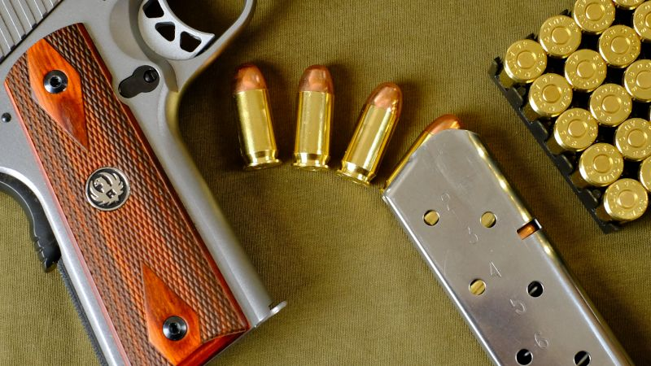

Wszystko, co dotychczas wiedziałeś na temat posiadania broni w Polsce, to nieprawda. Zmiana przepisów w 2011 roku odblokowała dostęp do broni palnej dla prawie każdego dorosłego Polaka. Jednak wciąż mało kto jest tego świadom.
Większość mieszkańców naszego kraju jest szczerze przekonana o tym, że:
Takie lub podobne mądrości ludowe zapewne słyszałeś niejeden raz. Pamiętam, gdy na jakiejś domówce - pchany entuzjazmem neofity - pochwaliłem się świeżo otrzymanym pozwoleniem na broń. Reakcją większości zgromadzonych tam znajomych były wielkie oczy z komentarzem: O, to tak wolno?
. Jasne, że wolno! Co prawda faktem jest, że posiadanie broni palnej jest w Polsce domyślnie zabronione, ale na szczęście sytuacja nie jest aż taka trudna jak się powszechnie sądzi. Przytoczone we wstępie legendy są równie prawdziwe co zeznania Pinokia!
W rzeczywistości, broń palna jest w zasięgu większości dorosłych Polaków. Niestety, prawo do posiadania broni w Polsce nie jest prawem konstytucyjnym, nadanym z góry. Dlatego nie wolno nam - pod groźbą odpowiedzialności karnej - posiadać broni, dopóki nie spełnimy pewnych wymagań określonych przepisami.
Nie ma żartów! Żaden wujek w Policji ci nie pomoże; za nielegalne posiadanie broni na pewno pójdziesz siedzieć, w skrajnym przypadku nawet na osiem lat.
Niesprawiedliwie, źle? Nie bardziej niż w przypadku prawa jazdy! Uprawnień do prowadzenia samochodu też nie mamy automatycznie, od urodzenia. Dopiero spełnienie pewnego zestawu warunków (wiek, zdrowie, kurs szkoleniowy, egzamin) pozwala nam te uprawnienia nabyć. Z bronią palną jest dokładnie tak samo - do jej posiadania także wymagane jest pewnego rodzaju prawo jazdy
, o które trzeba się postarać. To prawo jazdy
na pistolety, karabiny, rewolwery i strzelby, to nic innego jak właśnie pozwolenie na broń. Takie pozwolenie wydaje - oczywiście rękami swoich podwładnych - Komendant Wojewódzki Policji.
Analogia samochodowa jest trafna na jeszcze jednej płaszczyźnie. Otóż zdobycie pozwolenia na broń kosztuje w Polsce z grubsza tyle samo czasu i pieniędzy co uzyskanie prawa jazdy - wysiłek jest tego samego rzędu. W środowisku strzeleckim, porównanie to ma już status klasyki, zatem pozwalam sobie podkreślić:
Zdobycie pozwolenia na broń w Polsce, jest równie łatwe co uzyskanie prawa jazdy kategorii B.
O tym kto, kiedy i w jaki sposób może otrzymać pozwolenie na broń, mówią przepisy Ustawy o broni i amunicji. Ustawa ta, mająca głębokie korzenie w poprzednim ustroju politycznym, będąca w wielu miejscach niestaranna, nielogiczna i głupia, będzie ci towarzyszyć już przez cały czas trwania przygody z bronią palną. Na oficjalnej stronie internetowej Sejmu Rzeczpospolitej Polskiej, dostępny jest za darmo pełny tekst Ustawy o broni i amunicji. Jeśli poważnie myślisz o posiadaniu broni, to musisz zaprzyjaźnić się z tym aktem prawnym.
Ponieważ Ustawa o broni i amunicji pojawia się w dyskusjach i pismach bardzo często, jej nazwę - nawet w oficjalnych tekstach - zwykle skraca się do UoBiA.
W Polsce nie istnieje jedno uniwersalne pozwolenie na broń. Ustawa o broni i amunicji definiuje kilka rodzajów pozwoleń, zależnie od celu posiadania broni. Rozróżnienie broni ze względu na cel jej posiadania ma znikomy sens, bo niczemu nie służy i w niczym nikomu nie pomaga. Ale jest jak jest - nad ustawą pracowali i pracują ludzie, którzy na dziedzinie broni znają się równie dobrze co ryba na strojeniu fortepianów. Cóż, Polska z bliska... Niezależnie od tego, według ustawy można mieć nawet osiem różnych pozwoleń na broń, odpowiednio do celów:
W praktyce, ustawowe cele posiadania broni stanowią fikcję prawną i do niczego posiadacza broni nie zobowiązują. Nic nie stoi na przeszkodzie, żeby za pomocą broni sportowej odeprzeć napad bandyty, lub odwrotnie - wystartować w sportowych zawodach strzeleckich wykorzystując broń posiadaną do celów ochrony osobistej. Żaden przepis tego nie zabrania, a co nie jest zabronione - jest dozwolone.
Najistotniejsze zostawiłem jednak na deser. Nowelizacja Ustawy o broni i amunicji z 2011 roku, zniosła uznaniowość decyzji Komendanta Wojewódzkiego Policji o udzieleniu pozwolenia, dla wszystkich celów posiadania broni poza dwoma pierwszymi z ustawowej listy. Oznacza to, że jeśli spełnisz wszystkie ustawowe warunki, to komendant nie może odmówić i musi wydać ci pozwolenie na broń!
Kiedyś, przed wspomnianą nowelizacją, kandydat na posiadacza broni był w całości zdany na łaskę i niełaskę komendanta, który zupełnie arbitralnie decydował czy udzielić pozwolenia czy nie. I jak nietrudno się domyślić, zwykle mówił coś w rodzaju Widzi mi się, że nie dam panu pozwolenia na broń. I co mi pan zrobi?
. Na szczęście to już zamierzchła przeszłość! Dzisiaj, jeśli naprawdę chcesz mieć rewolwer, dubeltówkę lub karabin snajperski - będziesz miał, to tylko kwestia determinacji i cierpliwości.
To, że pozwolenia do ochrony wciąż są przydzielane uznaniowo, nie powinno cię martwić. Uprawnienia przez nie oferowane są wyjątkowo marne, nie ma czego żałować.
W następnym wpisie na blogu, przedstawię podstawowe warunki wspólne dla uzyskania dowolnego pozwolenia na broń. Dalej skupię się na szczegółach pozwoleń każdego typu oraz konkretnych krokach w kierunku ich uzyskania. Każdemu etapowi zdobywania pozwolenia poświęcę osobny tekst, pisany z punktu widzenia praktyka, który całą procedurę ma już za sobą. Będę odnosił się do obowiązujących przepisów, ale obiecuję pisać po ludzku, ograniczając cytowanie prawniczego bełkotu tylko do niezbędnego minimum.